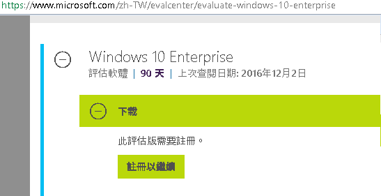
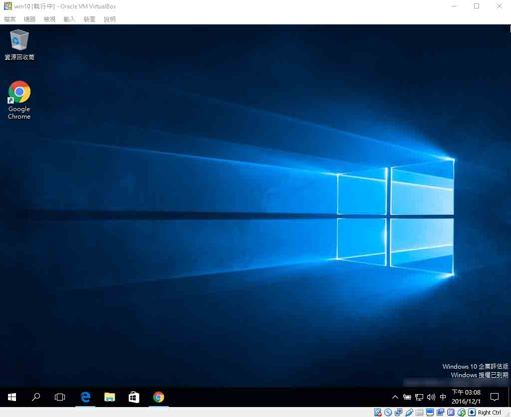
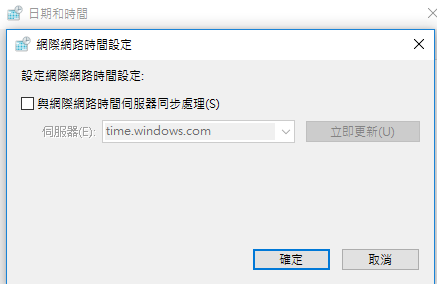
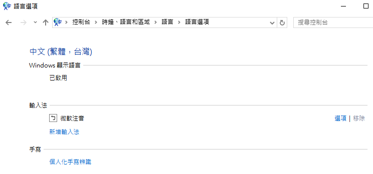

2016
Dec
04

這是微軟官方提供的 Windows 10 評估版，可以讓任何人免費下載使用，這個連結是微軟的網站，可以安心使用保證無毒，趁現在還開放下載，一定要趕快來下載一份保留在自已的硬碟，避免以後哪一天要使用 windows 10 卻找不到載點，像現在 Windows 7 已經找不到官方的免費下載連結，Win 10 評估版它的檔案格式為 ISO，下載回來後，要先用燒錄軟體，燒成光碟片，再用它來安裝 Windows 10 ，燒錄軟體可以用 MagicISO, Nero 等，而我是把 Win 10 裝在 VirtualBox 理，使用 VirtualBox 裝 Win10 ISO 檔是連光碟都不用燒出來的。
這個版本只提供 90 天的試用，但完全不用擔心，像我的 Win10 已經過期了，只要修改系統時間，讓系統認為試用期還沒到，那麼我們就可以繼續使用 Win 10。
修改日期時，記得也要取消時間同步功能，如果你沒有取消時間同步，那麼每一段時間，系統會自動上網更新時間，結果你的 Win 10 就會過期。
下載繁體中文
預設 Win10 會是英文版，我們只要到語言設定，加繁體中文，再進去繁體中文的選項，在 Windows 選則語言的地方，點擊下載中文語言，下載完之後再重新開機， windows 就變成繁體中文囉。
